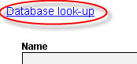
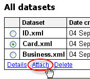

<?xml version="1.0" encoding="UTF-8"?><rss version="2.0"
	xmlns:content="http://purl.org/rss/1.0/modules/content/"
	xmlns:wfw="http://wellformedweb.org/CommentAPI/"
	xmlns:dc="http://purl.org/dc/elements/1.1/"
	xmlns:atom="http://www.w3.org/2005/Atom"
	xmlns:sy="http://purl.org/rss/1.0/modules/syndication/"
	xmlns:slash="http://purl.org/rss/1.0/modules/slash/"
	>

<channel>
	<title>Printer update &#8211; On web to print sofware, solutions and hosted services</title>
	<atom:link href="http://www.zetaprints.com/blog/category/printer-update/feed/" rel="self" type="application/rss+xml" />
	<link>http://www.zetaprints.com/blog</link>
	<description>From web to print and everything in between</description>
	<lastBuildDate>Fri, 02 Aug 2013 10:44:32 +0000</lastBuildDate>
	<language>en-US</language>
	<sy:updatePeriod>hourly</sy:updatePeriod>
	<sy:updateFrequency>1</sy:updateFrequency>
	<generator>https://wordpress.org/?v=4.4.1</generator>
	<item>
		<title>Trimming user input</title>
		<link>http://www.zetaprints.com/blog/2009/02/03/trimming-user-input/</link>
		<comments>http://www.zetaprints.com/blog/2009/02/03/trimming-user-input/#comments</comments>
		<pubDate>Tue, 03 Feb 2009 10:14:54 +0000</pubDate>
		<dc:creator><![CDATA[admin]]></dc:creator>
				<category><![CDATA[Printer update]]></category>
		<category><![CDATA[web-to-print features]]></category>
		<category><![CDATA[web-to-print software]]></category>

		<guid isPermaLink="false">http://www.zetaprints.com/blog/?p=319</guid>
		<description><![CDATA[We&#8217;ve just released a wee-little update to the site with a new feature to help you manage user input better. User input can be automatically trimmed to remove: extra spaces at the beginning and end of text extra lines at the beginning and end of text lines and spaces combined Click on a field name [&#8230;]]]></description>
				<content:encoded><![CDATA[<p>We&#8217;ve just released a wee-little update to the site with a new feature to help you manage user input better.</p>
<p>User input can be automatically trimmed to remove:</p>
<ol>
<li>extra spaces at the beginning and end of text</li>
<li>extra lines at the beginning and end of text</li>
<li>lines and spaces combined</li>
</ol>
<p>Click on a field name to bring up a filed editor. Pick a trim option. Save. Test.</p>
<p><a href="http://ec2-67-202-43-115.compute-1.amazonaws.com/blog/wp-content/uploads/2009/02/web-to-print.png"></a></p>
<p>Multiple templates can have trim option set via <em>Template Fields page</em>.</p>
]]></content:encoded>
			<wfw:commentRss>http://www.zetaprints.com/blog/2009/02/03/trimming-user-input/feed/</wfw:commentRss>
		<slash:comments>2</slash:comments>
		</item>
		<item>
		<title>Long time no news</title>
		<link>http://www.zetaprints.com/blog/2008/10/09/long-time-no-news/</link>
		<comments>http://www.zetaprints.com/blog/2008/10/09/long-time-no-news/#respond</comments>
		<pubDate>Thu, 09 Oct 2008 14:23:48 +0000</pubDate>
		<dc:creator><![CDATA[admin]]></dc:creator>
				<category><![CDATA[Printer update]]></category>
		<category><![CDATA[Web-to-Print]]></category>

		<guid isPermaLink="false">http://www.zetaprints.com/blog/?p=240</guid>
		<description><![CDATA[Sorry, there hasn&#8217;t been an update to the site for quite a while. All new features are held up by the infrastructure upgrade we are working on at the moment. We should be finished mid-next week and will roll out lots of new stuff in the following days. Our help site got a small re-vamp [&#8230;]]]></description>
				<content:encoded><![CDATA[<p>Sorry, there hasn&#8217;t been an update to the site for quite a while. All new features are held up by the infrastructure upgrade we are working on at the moment. We should be finished mid-next week and will roll out lots of new stuff in the following days.</p>
<p>Our help site got a small re-vamp and lots of new posts. Check out these cool <a title="web-to-print design techniques" href="../../../../help/category/design-techniques/">web-to-print design ideas</a>. They may come handy if you are not in that strict branded corporate design world.</p>
<p>The traffic to customers&#8217; sites and to zetaprints.com has slumped in the last few days, while there was no change to the overall internet traffic. Out brief research shows people are busy watching news, live presidential debate and other stress-inducing events. They just don&#8217;t feel like buying. A quick poll amongst other friendly e-commerce websites proved it&#8217;s not just us. It&#8217;s bouncing back slowly, though.</p>
]]></content:encoded>
			<wfw:commentRss>http://www.zetaprints.com/blog/2008/10/09/long-time-no-news/feed/</wfw:commentRss>
		<slash:comments>0</slash:comments>
		</item>
		<item>
		<title>Web to print datasets</title>
		<link>http://www.zetaprints.com/blog/2008/09/08/web-to-print-datasets/</link>
		<comments>http://www.zetaprints.com/blog/2008/09/08/web-to-print-datasets/#respond</comments>
		<pubDate>Mon, 08 Sep 2008 12:43:31 +0000</pubDate>
		<dc:creator><![CDATA[admin]]></dc:creator>
				<category><![CDATA[Printer update]]></category>
		<category><![CDATA[web-to-print software]]></category>

		<guid isPermaLink="false">http://www.zetaprints.com/blog/?p=226</guid>
		<description><![CDATA[This new web-to-print feature comes handy if you have corporate customers with large number of branches / franchises. It may be convenient for them to upload all their branch details to the site and let users pick them from the list instead of typing it separately. The downside here is the maintenance of these web-to-print [&#8230;]]]></description>
				<content:encoded><![CDATA[<p>This new web-to-print feature comes handy if you have corporate customers with large number of branches / franchises. It may be convenient for them to upload all their branch details to the site and let users pick them from the list instead of typing it separately. The downside here is the maintenance of these <a title="web to print datasets" href="../../../../help/datasets/">web-to-print datasets</a> &#8211; it will be your responsibility and you may be the one to blame if the customer forgets to tell you about a changed phone number.</p>
<p>Web to print datasets are uploaded on Fields page of any template and once uploaded can be re-used with any number of templates. <a title="web to print demo" href="../../../../help/flash/Dataset.html" target="_blank">Watch a demo</a>.</p>
<p>Files are uploaded in MS Excel 2003 format saved as XML.</p>
<p></p>
<p></p>
<p></p>
]]></content:encoded>
			<wfw:commentRss>http://www.zetaprints.com/blog/2008/09/08/web-to-print-datasets/feed/</wfw:commentRss>
		<slash:comments>0</slash:comments>
		</item>
		<item>
		<title>Preview image resizing and order retention</title>
		<link>http://www.zetaprints.com/blog/2008/03/04/preview-image-resizing-and-order-retention/</link>
		<comments>http://www.zetaprints.com/blog/2008/03/04/preview-image-resizing-and-order-retention/#respond</comments>
		<pubDate>Tue, 04 Mar 2008 05:43:16 +0000</pubDate>
		<dc:creator><![CDATA[admin]]></dc:creator>
				<category><![CDATA[Printer update]]></category>
		<category><![CDATA[Web-to-Print]]></category>

		<guid isPermaLink="false">http://www.zetaprints.com/blog/?p=187</guid>
		<description><![CDATA[Deleted orders are removed permanently Orders sitting in DELETED folder are retained for 6 months or less. Orders from other folders are retained for a minimum of 6 months. Read more in a new help post. You can set a different retention period per catalog. Restore default preview You can restore the original preview image [&#8230;]]]></description>
				<content:encoded><![CDATA[<h2>Deleted orders are removed permanently</h2>
<p>Orders sitting in DELETED folder are retained for 6 months or less. Orders from other folders are retained for a minimum of 6 months. Read more in a new <a href="../../../../help/order-retention/">help post</a>.<br />
You can set a different retention period per catalog.<br />
<br />
</p>
<h2>Restore default preview</h2>
<p>You can restore the original preview image with one click.<br />
</p>
]]></content:encoded>
			<wfw:commentRss>http://www.zetaprints.com/blog/2008/03/04/preview-image-resizing-and-order-retention/feed/</wfw:commentRss>
		<slash:comments>0</slash:comments>
		</item>
		<item>
		<title>PayPal issues and another upgrade</title>
		<link>http://www.zetaprints.com/blog/2008/01/30/paypal-issues-and-another-upgrade/</link>
		<comments>http://www.zetaprints.com/blog/2008/01/30/paypal-issues-and-another-upgrade/#respond</comments>
		<pubDate>Wed, 30 Jan 2008 19:30:32 +0000</pubDate>
		<dc:creator><![CDATA[admin]]></dc:creator>
				<category><![CDATA[Printer update]]></category>
		<category><![CDATA[Web-to-Print]]></category>

		<guid isPermaLink="false">http://www.zetaprints.com/blog/?p=183</guid>
		<description><![CDATA[We were alerted by several customers that some paid orders are sitting in &#8220;unpaid&#8221;. It appears we didn&#8217;t get notifications from PayPal. Not really blaming them for this as it could be a communication problem or something at our end. Please, check your recent payments for any &#8220;orphans&#8221; and try to match to unpaid orders. [&#8230;]]]></description>
				<content:encoded><![CDATA[<p>We were alerted by several customers that some paid orders are sitting in &#8220;unpaid&#8221;.<br />
It appears we didn&#8217;t get notifications from PayPal. Not really blaming them for this as it could be a communication problem or something at our end.</p>
<p>Please, check your recent payments for any &#8220;orphans&#8221; and try to match to unpaid orders. Email <a title="Contact ZetaPrints" href="mailto:support@zetaprints.com" target="_self">support@zetaprints.com</a> with OrderID and PayPal transaction ID.</p>
<h2>Changes coming to payments system today</h2>
<p>We are making changes to how users make payments:</p>
<ul>
<li>PayPal will open in the same window, not in a new one</li>
<li>All PayPal transactions will be recorded in the order details, including REFUNDED, PENDING, etc.</li>
<li>Users should see the transaction status by the time they return back to the site from PayPal</li>
</ul>
<h2>Payments from printers</h2>
<p>Your home page will change from the dashboard to BILLING if you have outstanding invoices from ZetaPrints. The system may pop up the BILLING page at random if your payment is outstanding for more than 20 days. Please, contact us if you think your account should not be charged or if the billing is incorrect.<br />
Alternative payment methods are available, but the BILLING page may still pop up until the payment is cleared.</p>
<h2>Trial users</h2>
<p>Trial customers still get billed, but we will wave the fees if you contact us. There is no time limit to the trial period. We consider it over when you start taking real orders.</p>
]]></content:encoded>
			<wfw:commentRss>http://www.zetaprints.com/blog/2008/01/30/paypal-issues-and-another-upgrade/feed/</wfw:commentRss>
		<slash:comments>0</slash:comments>
		</item>
		<item>
		<title>SP2 for CorelDRAW is recommended</title>
		<link>http://www.zetaprints.com/blog/2007/05/08/sp2-for-coreldraw-is-recommended/</link>
		<comments>http://www.zetaprints.com/blog/2007/05/08/sp2-for-coreldraw-is-recommended/#respond</comments>
		<pubDate>Tue, 08 May 2007 11:01:28 +0000</pubDate>
		<dc:creator><![CDATA[admin]]></dc:creator>
				<category><![CDATA[Printer update]]></category>

		<guid isPermaLink="false">http://www.zetaprints.com/blog/?p=141</guid>
		<description><![CDATA[Corel released SP2 for Corel Graphics Suit X3. The Service Pack has some improvements for importing/exporting files and other minor issues. You can download the service pack here: http://www.corel.com/servlet/Satellite/us/en/Content/1157481830155?pid=1166553954992 Make sure you already have SP1 installed. If not, download it here: http://www.corel.com/servlet/Satellite?c=Content_C1&#38;cid=1153321224268&#38;lc=en&#38;pagename=CorelCom/Layout&#38;pid=1151092456309 Please, let us know if you have any issues with installing this or [&#8230;]]]></description>
				<content:encoded><![CDATA[<h3>Corel released SP2 for Corel Graphics Suit X3.</h3>
<p>The Service Pack has some improvements for importing/exporting files and other minor issues.</p>
<p>You can download the service pack here: <a href="http://www.corel.com/servlet/Satellite/us/en/Content/1157481830155?pid=1166553954992">http://www.corel.com/servlet/Satellite/us/en/Content/1157481830155?pid=1166553954992</a></p>
<p>Make sure you already have SP1 installed. If not, download it here:<br />
<a href="http://www.corel.com/servlet/Satellite?c=Content_C1&cid=1153321224268&lc=en&pagename=CorelCom/Layout&pid=1151092456309">http://www.corel.com/servlet/Satellite?c=Content_C1&amp;cid=1153321224268&amp;lc=en&amp;pagename=CorelCom/Layout&amp;pid=1151092456309</a></p>
<p>Please, let us know if you have any issues with installing this or another service pack for your Corel software.</p>
]]></content:encoded>
			<wfw:commentRss>http://www.zetaprints.com/blog/2007/05/08/sp2-for-coreldraw-is-recommended/feed/</wfw:commentRss>
		<slash:comments>0</slash:comments>
		</item>
		<item>
		<title>Zetaprints news wire</title>
		<link>http://www.zetaprints.com/blog/2007/05/04/zetaprints-news-wire/</link>
		<comments>http://www.zetaprints.com/blog/2007/05/04/zetaprints-news-wire/#respond</comments>
		<pubDate>Fri, 04 May 2007 09:56:02 +0000</pubDate>
		<dc:creator><![CDATA[admin]]></dc:creator>
				<category><![CDATA[Printer update]]></category>

		<guid isPermaLink="false">http://www.zetaprints.com/blog/?p=139</guid>
		<description><![CDATA[Our customers are probably used to a very personal service and individual update notifications, but this is to change to a simpler way of keeping everyone informed. From now on, you will see a news column on your home page with important updates and notifications. The homepage itself had a makeover to turn it into [&#8230;]]]></description>
				<content:encoded><![CDATA[<p>Our customers are probably used to a very personal service and individual update notifications, but this is to change to a simpler way of keeping everyone informed.<br />
From now on, you will see a news column on your home page with important updates and notifications. The homepage itself had a makeover to turn it into a more useful dashboard with a snapshot of your current activities.<br />
The news column can be temporarily hidden from view until there is something new you haven&#8217;t read. Just click &#8220;Hide&#8221; at the bottom of the column.</p>
<p>Please, report any issues with the update immediately using the feedback form on the page. Your general feedback about the makeover is very welcome. There is a bit more coming over the next couple of days. The roll-out will be gradual to avoid any disruption. The changes mainly relate to the administration side of the site.</p>
]]></content:encoded>
			<wfw:commentRss>http://www.zetaprints.com/blog/2007/05/04/zetaprints-news-wire/feed/</wfw:commentRss>
		<slash:comments>0</slash:comments>
		</item>
	</channel>
</rss>

<!-- Localized -->